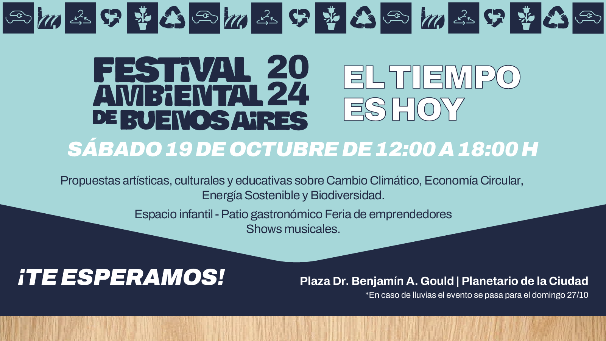
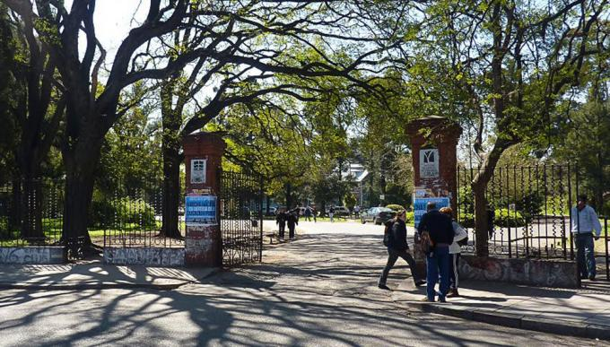

🕓 Eventos Pasados
Festival Ambiental de Buenos Aires (2024)
Emprendimientos sustentables, charlas y talleres sobre cuidado del medio ambiente. Entrada libre y gratuita.
Cuándo: El día 19 de octubre de 2024
Dónde: Plaza Dr. Benjamín A. Gould, Palermo
Primeras Jornadas Ambientales de la UBA (2024)
Encuentro abierto a la comunidad en el marco del Día Mundial del Ambiente. Su objetivo fue visibilizar los aportes que la UBA y sus unidades académicas realizan por el ambiente, ya sea mediante proyectos de investigación, extensión o innovación técnica y tecnológica.
Cuándo: 5 de junio de 2024
Dónde: Facultad de Agronomía de la UBA – Av. S. Martín 4453, CABA
